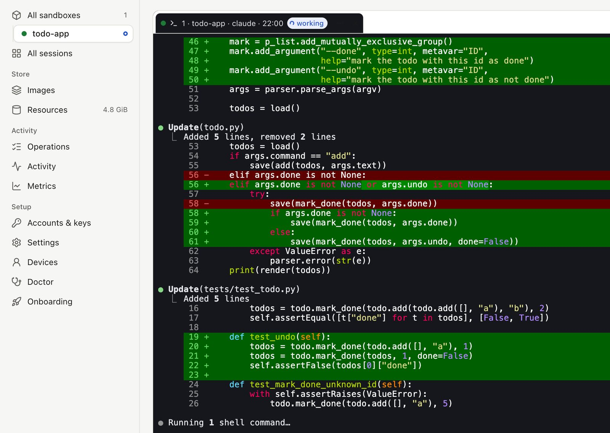
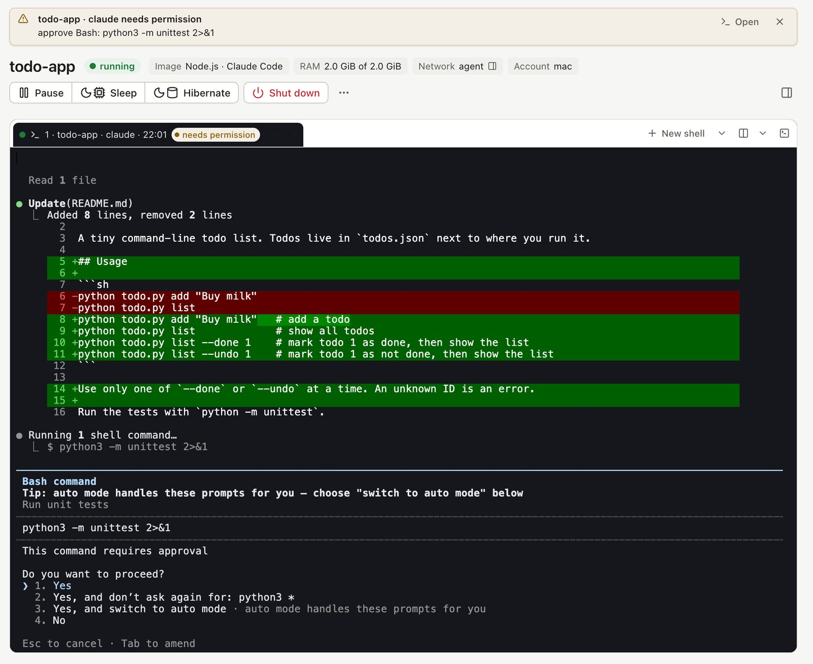
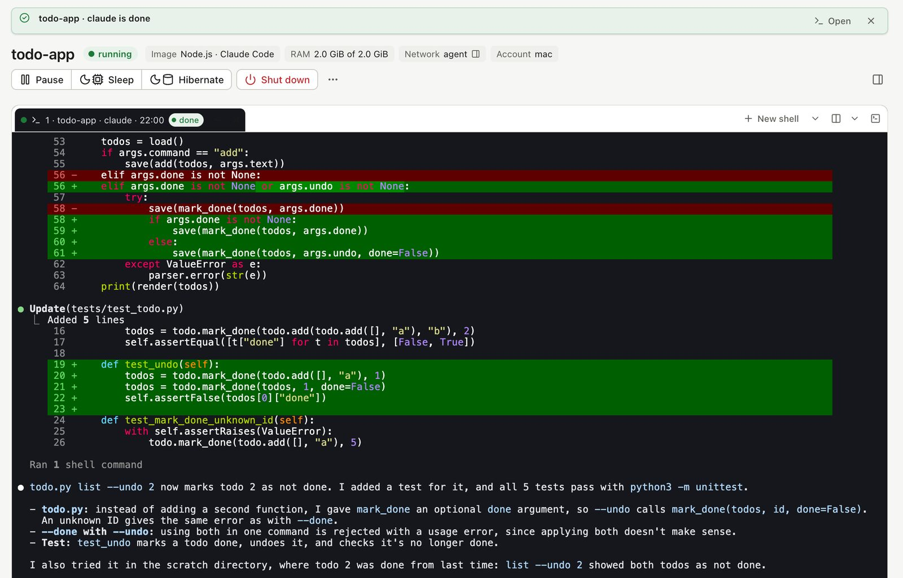
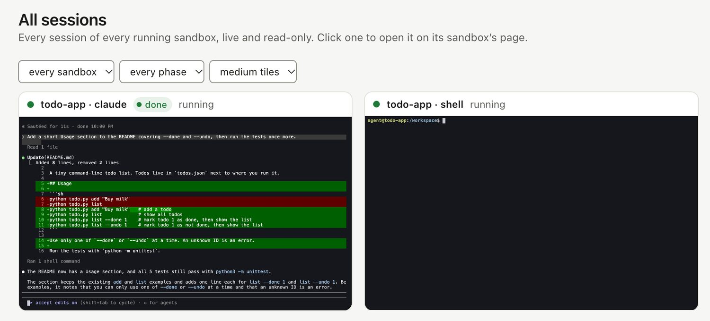

Dozer Sandbox 0.33 - see what your agent is doing
Dozer Sandbox 0.33 shows what each agent is doing at a glance, upgrades with one command, runs the dashboard in the background, and ends setup with an optional sign-up.
It's on the stable channel now, as 0.33.1. Here's each change.
See what the agent is doing#
Claude Code and pi now tell Dozer what they're doing: working, done, waiting for your answer, or stopped by an error. Dozer shows it in the dashboard wherever the session appears, so you can leave an agent to work and glance back when it matters.
While the agent works, its tab shows working, and a dot beside the sandbox in the sidebar says something is going on.

When the agent stops to ask you something, such as permission to run a command, a notice appears at the top of the dashboard saying what it wants, with an Open button that takes you straight to the session. You see it on whichever page you're on.

When it finishes, the tab says done and the notice tells you so. The same status shows on every tile in All sessions, so with several sandboxes running you can see at a glance which agent is still busy and which is waiting for you.


The status shows while the dashboard is open (doz ui). Claude Code needs version 2.1.295 or later, and pi 1.1.0 or later.
How it works#
It uses a terminal escape sequence: bytes mixed into a program's output that the terminal acts on instead of showing, the same way programs set a window's title or colours. This one is OSC 7501, for program status (Mitchell Hashimoto's write-up).
- The handshake: a program asks the terminal whether it understands the sequence (
ESC ] 7501 ; ? ST). If the terminal answers, the program reports its state (working, done, blocked or error, with a short message) each time it changes. - Inside the sandbox: every session runs under a small holder process that reads everything the program writes, whether or not anyone is watching. It answers that question, keeps the latest report, and passes the output on unchanged.
- On your Mac: the Dozer host watches each running session's status, and the dashboard draws it.
Nothing is read from the screen or guessed: Dozer shows exactly what the agent itself reports.
doz upgrade#
One command moves you to the newest version on your channel. It asks first; -y skips the question.
doz upgradeThe dashboard in the background#
doz ui --detach runs the dashboard without holding a terminal, and doz ui stop stops it from any terminal.
Staying in touch#
Setup now ends with an optional sign-up for release news, early access, and tips and tricks, by email. Skip it, or sign up later with doz signup.
Fixed in 0.33.1: the agent can write your workspace again#
Since 0.30, an agent in a sandbox could read a shared project folder but not change it, and git refused the folder ("dubious ownership"). 0.33.1 fixes it. After upgrading, a sandbox that was running, asleep or hibernated needs a doz shutdown NAME and then doz start NAME; one that was shut down picks up the fix at its next start.
Upgrade#
doz upgradeNew to Dozer Sandbox? Getting started takes a few minutes.